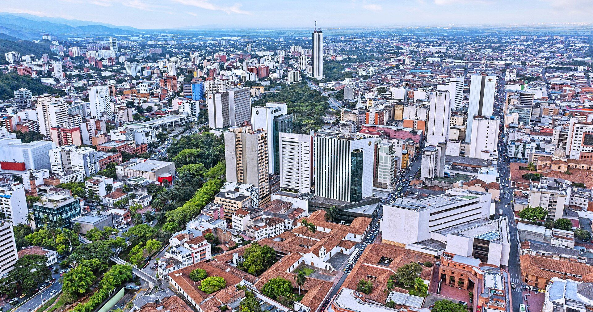
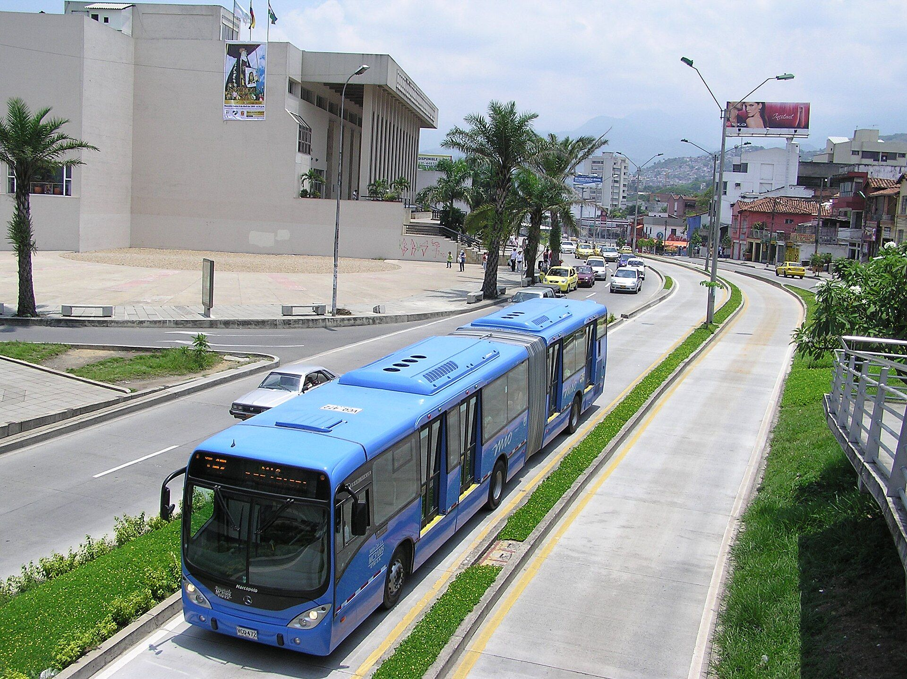
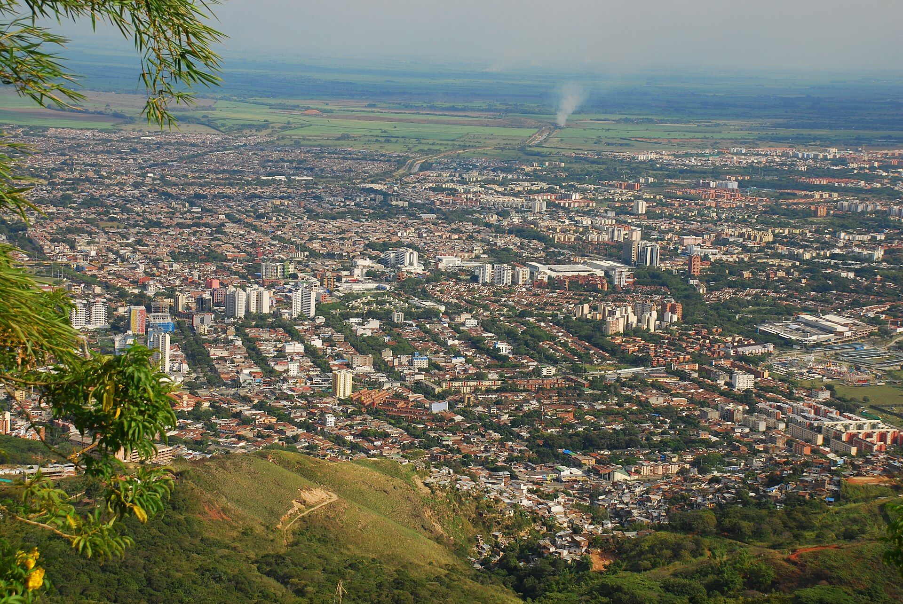
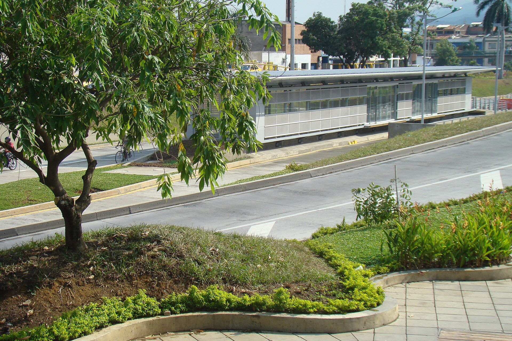
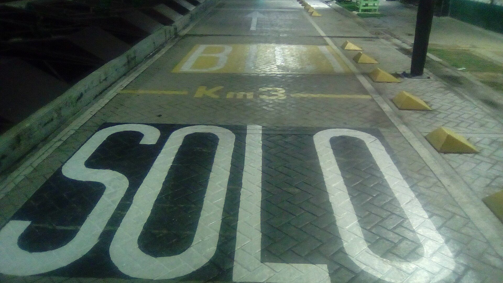
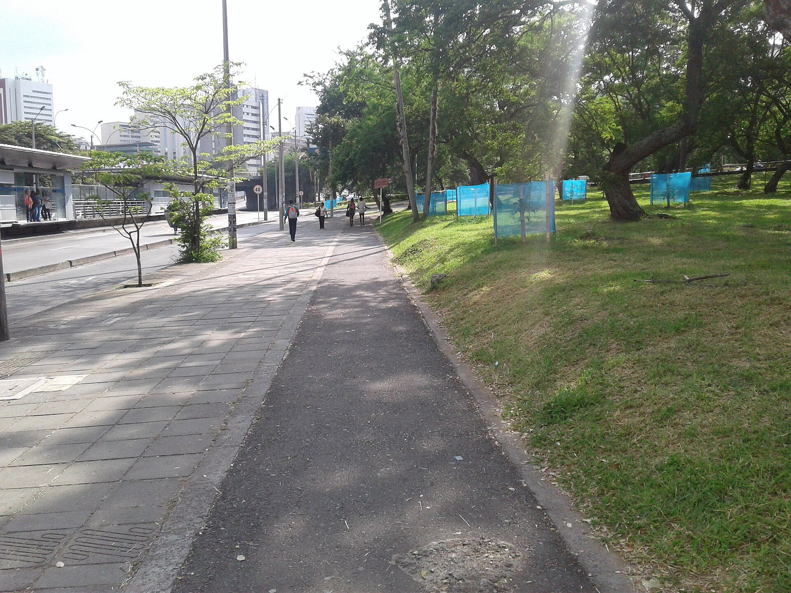
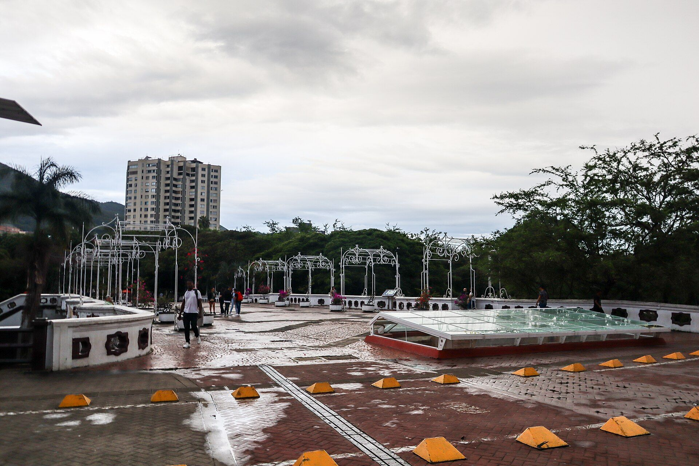
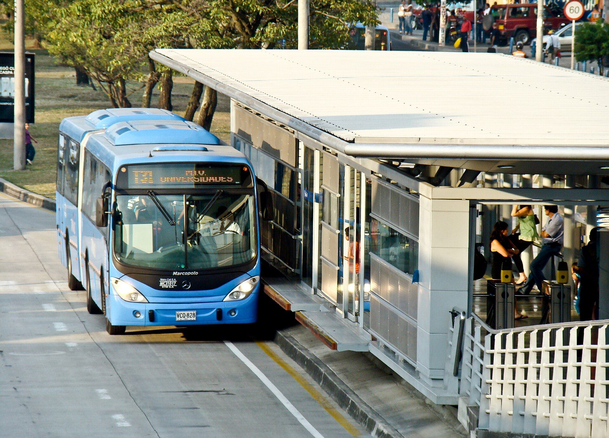
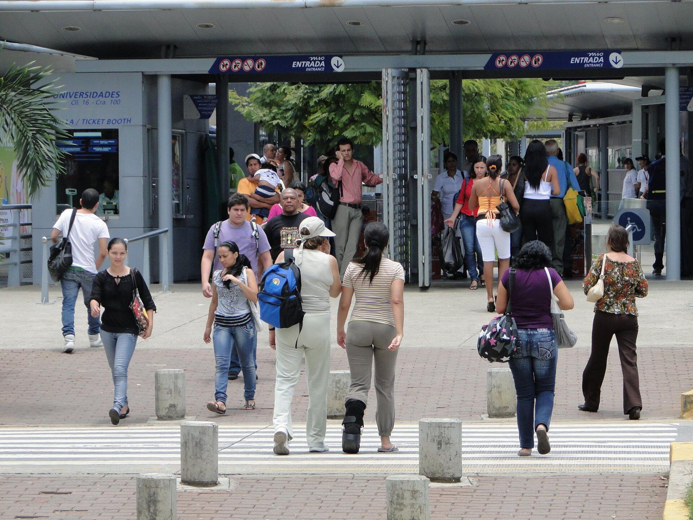

Movilidad
sostenibleen Cali
Avances, obstáculos y potencial para disminuir las emisiones del transporte
Ambiente y desarrollo sostenible · Universidad Autónoma de Occidente
Cuatro preguntas guían el recorrido
Diagnóstico
¿Cuántos vehículos se mueven en Cali y cómo está el MIO?
Impactos
¿Qué le cuestan al aire, a la salud y al tiempo de la gente?
Avances
¿Qué se hace para que carros, motos, bicis y buses sean más limpios?
Obstáculos y potencial
¿Qué frena el cambio y cuánto se puede reducir?
Reducir las emisiones de gases de efecto invernadero y de contaminantes del transporte.
Preparar la movilidad para más calor, lluvias intensas e inundaciones.
El mundo ya pisa el acelerador de la movilidad sostenible
carros nuevos vendidos en el mundo en 2025 fue eléctrico: más de 20 millones.
del CO₂ de la energía en el mundo viene del transporte; casi tres cuartas partes, de los vehículos de carretera.
muertes viales al año. Las de ciclistas subieron casi un 20% desde 2010: la infraestructura no va al ritmo de la bici.
Ciudades que marcan la ruta
Santiago
- 3.849 buses eléctricos en el transporte público a finales de 2025
- Más de la mitad de la flota ya es eléctrica
Bogotá
- ~1.485 buses eléctricos en TransMilenio (fin de 2025)
- 677 km de ciclorrutas y 7,3% de los viajes en bici
Copenhague
- 35% de los viajes al trabajo o estudio, en bici (2021)
- Meta de la ciudad: 50%
vehículos, aproximadamente, forman el parque automotor de Cali.
Cali se mueve cada vez más en vehículo particular, sobre todo en moto
motos registradas en Cali en 2025, según la Secretaría de Movilidad.
vehículos nuevos matriculados entre enero y septiembre de 2026: +37,1%.
Principal medio de transporte de los caleños:
Última encuesta de movilidad (2015): 3 millones de viajes en vehículo

El MIO opera con una cuarta parte de su flota parada
11 troncales, 20 pretroncales y 62 alimentadoras, más 1 cable, 7 terminales y 3 depósitos.
21% del reparto modal, frente a ~25–26% de la moto.
En el III trimestre de 2026p fue el 24,4% de 788.
Articulado ~18,3 m (140–160 pas.), padrón 12 m (80–90) y complementario ~8,5 m (50–56).
41 eléctricos (5,2%): 35 busetones BYD y 6 articulados. * El MIO Cable estuvo suspendido tras el sismo del 10 de agosto de 2026.
¿Cali va atrasada o avanzada?
Cali avanza en seguridad vial y va en camino con los carros, pero está atrasada en buses eléctricos, bicicleta y datos.

Los vehículos, principal fuente de contaminación
del material particulado de Cali lo producen los vehículos.
de la huella de carbono de Cali viene del transporte, el principal emisor de gases de efecto invernadero.
5
25
82% de los días el aire fue “Aceptable”, no “Bueno”.
Aclaración: Cascajal está en zona rural y no representa la calidad del aire urbana, que mide el DAGMA.
El costo también se mide en vidas, tiempo y dinero
personas murieron en las vías de Cali en 2025; tres de cada cinco eran motociclistas.
perdidas por tráfico en hora pico en 2025.
Velocidad promedio: 20,6 km/h
menos por viaje en moto que en MIO, y un gasto mensual menor:
de los motociclistas está conforme con su medio de transporte: el reto es ofrecer algo mejor que la moto.

Renovar el MIO no basta: hay que cambiar qué vehículos compran los caleños y cómo se mueven.
AVANCES POR TIPO DE VEHÍCULO →
Comprar un carro eléctrico o híbrido ya cuesta menos, y el mercado responde
- IVA de 5% para eléctricos, frente a 19% para combustión
- Impuesto vehicular de máximo 1% del valor comercial (Ley 1964 de 2019)
- Arancel cero y deducción en renta con certificado de la UPME
- Decreto 0595 de 2026: incentivos para ensamblar eléctricos en Colombia
- En Cali, híbridos y eléctricos están exentos del pico y placa
de los vehículos nuevos matriculados en Colombia entre enero y septiembre de 2026 fueron eléctricos o híbridos: 114.255 de 247.212.
La moto crece sin incentivos para pasarse a eléctrica
Exentas del pico y placa
Todas las motos circulan sin restricción, de gasolina o eléctricas: el beneficio no premia a la limpia.
Sin SOAT diferencial
Las motos eléctricas pagan el SOAT según sus características técnicas, sin tarifa especial.
9 de cada 10 sin registro
motos eléctricas importadas no aparecen en el RUNT: informalidad y poco control.
motos registradas en Colombia: el 63% del parque automotor.

La bicicleta mueve a miles de caleños, pero en una red poco segura
de ciclorrutas en Cali; menos del 40% son seguras y segregadas.
viajes en bicicleta al día: entre el 3% y el 5% de los viajes. El potencial técnico supera el 10%.
ciclistas muertos entre enero y el 4 de noviembre de 2025, uno más que en el mismo periodo de 2024.
Hay normas e inversión nueva para la bicicleta
Ley 1811 de 2016
Medio día libre por cada 30 llegadas en bici al trabajo para funcionarios públicos, y un pasaje abonado por usar la bici para llegar al masivo. Cali lo reglamentó con el Decreto 2107 de 2020.
Proyecto de Acuerdo 090 de 2026
Aprobado en primer debate en el Concejo: ciclorrutas obligatorias en vías nuevas, biciparqueaderos, integración con el MIO y un Consejo Distrital de la Bicicleta.
de nueva ciclorruta en la Carrera 1D, entre calles 44 y 73, por $4.405 millones.
de Ciclovida dominical, la más larga de su historia, con 20 km nuevos.
El MIO renueva su flota y, por primera vez, la flota será pública
Los buses nuevos sustituyen unidades Euro II, III y IV. Siguen la licitación del Tramo 3 de la Troncal Oriental y la segunda fase de chatarrización del transporte colectivo, suspendida más de 10 años.
buses públicos nuevos serán diésel (74,3%).
Tren y metro son proyectos de largo plazo que aún buscan financiación
Tren de Cercanías del Valle
Metro de Cali
Seis obstáculos frenan la transición
Financiación
La Nación negó la cofinanciación del 70% del tren y el metro no tiene fuentes.
Crisis del MIO
Plan de salvamento y una cuarta parte de la flota fuera de servicio.
Motos sin incentivos
Sin SOAT diferencial y con exención de pico y placa para todas.
Híbridos como eléctricos
Cali exime del pico y placa a los híbridos de gasolina.
Recarga pública
Celsia, pionera en el Valle, salió del negocio de estaciones de carga.
Bicicleta insegura
Menos del 40% de las ciclorrutas son segregadas; 15 ciclistas muertos en 2025.
La información sobre ambiente y movilidad es escasa y difícil de encontrar
Desactualizada
La encuesta origen-destino vigente es de 2015. Desde agosto de 2026 está en campo la nueva Gran Encuesta Regional de Movilidad.
Incompleta
Falta el desglose público de buses diésel y GNV de los concesionarios privados del MIO, y un corte abierto del RUNT 2025–2026 para Cali.
Dispersa
La calidad del aire urbana la mide el DAGMA y la rural la CVC, en portales e informes distintos.
Sin datos abiertos y fáciles de usar, la ciudadanía no puede seguir ni exigir la transición.

CalorFoto: Akire gatuna · CC BY-SA 4.0
LluviasFoto: ProtoplasmaKid · CC BY 4.0La movilidad también debe adaptarse al calor y a las lluvias
Sombra
Corredores verdes con árboles en ciclorrutas y andenes para bajar la temperatura del recorrido.
Estaciones protegidas
Paradas del MIO y del tren con sombra y protección contra la lluvia.
Drenaje
Vías troncales que no se inunden en temporada de lluvias.
Buses frescos
Los buses nuevos del MIO tienen aire acondicionado, que protege a los usuarios del calor.

¿Cuánto CO₂ se puede evitar con buses eléctricos?
de CO₂ al año evitaba la primera flota eléctrica del MIO: 26 buses que recorrían 200 km diarios cada uno.
de CO₂ al año por cada bus eléctrico (520 t ÷ 26 buses).
de CO₂ al año podrían evitar los 140 buses eléctricos acumulados del sistema: 41 actuales + 99 públicos nuevos (33 + 66).
20 t × 140 buses = 2.800 t al añoSupone que cada bus recorre y reemplaza lo mismo que la flota de referencia. Solo con los 99 buses públicos nuevos, la estimación sería de 1.980 t al año.
Cuatro propuestas para acelerar el cambio
Incentivos a la moto eléctrica
SOAT diferencial, parqueaderos y crédito para domiciliarios y trabajadores.
Exención solo para cero emisiones
Dejar sin pico y placa solo a los 100% eléctricos, como anunció en su momento Medellín.
Integrar bicicleta y MIO
Red continua y segregada de ciclorrutas, biciparqueaderos en estaciones y el pasaje abonado de la Ley 1811.
Rescatar el MIO antes del metro
Más buses eléctricos, rutas confiables y el tren de cercanías como columna regional.
Guía interactiva de compra de carros eléctricos
Un aplicativo web para que cualquier persona resuelva sus dudas antes de comprar un vehículo eléctrico, en un lenguaje sencillo e intuitivo.
¿Cuánto recorre al mes?
Calcula el uso real según los kilómetros mensuales.
Comparador
Compara vehículos eléctricos entre sí y frente a los de combustión.
Consumo por rutas
Muestra el consumo eléctrico en recorridos de Cali y su diferencia con la gasolina.
Normas e incentivos
Explica cómo pedir la reducción del IVA, el impuesto vehicular, la exención de pico y placa y el certificado UPME.
Alimentada con información del Gobierno nacional y la Alcaldía de Cali: centraliza los datos, resuelve las dudas que frenan la compra y deja ver los vacíos en la promoción de los eléctricos.
Guía interactiva de movilidad limpia alrededor del MIO
El MIO opera con 583 de sus 793 buses y un déficit del 41,6% en rutas alimentadoras: eso empuja a la gente hacia la moto.
Calculadora de la moto eléctrica
Compara el SOAT 2026 de motos de combustión y eléctricas para evitar compras mal informadas y la informalidad (9 de cada 10 sin RUNT).
Enrutador seguro bici + MIO
Usa las capas del Geovisor IDESC para sugerir corredores protegidos hasta los 7 biciparqueaderos BiciMIO (806 cupos) y registrar viajes para los incentivos de la Ley 1811.
Monitor de aire y calor
Unifica las 9 estaciones urbanas del DAGMA y la de la CVC en Cascajal, con alertas claras de PM2.5 y PM10 y corredores verdes.
¿Cuánto paga de SOAT al año?
Bici protegida hasta el MIO
Calidad del aire ahora
Reingeniería y reconversión modular de buses diésel del MIO
Híbrido en serie
Para la mayoría de padrones y alimentadores rescatados.
100% eléctrico
En rutas de alta frecuencia y sin pendientes.
Híbrido paralelo
Cuando la caja original del bus aún sirve.
- Menos inversión y tiempo que comprar buses nuevos
- Impulsa la metalmecánica regional
- Menos emisiones y fallas
La movilidad de Cali toca tres Objetivos de Desarrollo Sostenible
bienestar
3.6Reducir a la mitad las muertes y lesiones por siniestros viales (a 2030).
3.9Reducir las muertes y enfermedades por contaminación del aire.
327 muertes viales en 2025, y los vehículos generan el 93% del material particulado.
11.2Transporte seguro, asequible, accesible y sostenible para todos, con énfasis en el transporte público.
11.6Reducir el impacto ambiental de las ciudades, en especial en la calidad del aire.
El MIO mueve el 21% de los viajes con una cuarta parte de su flota parada.
el clima
13.1Fortalecer la resiliencia y la adaptación a los riesgos del clima.
13.2Incorporar medidas contra el cambio climático en las políticas y los planes.
El transporte es el 51% de la huella de carbono de la ciudad.
Lo que vimos y lo que proponemos apunta a estas metas: mitigación (ODS 3 y 13), adaptación (ODS 13) y un transporte público que funcione (ODS 11).

Cali avanza en mitigación, pero la cultura de compra limpia cambia más rápido en carros que en motos y bicicletas.
¿Qué tendría que pasar para que usted dejara la moto o el carro por el MIO o la bicicleta?
Jose Giraldo · Santiago Camayo
Alcaldía de Cali. (2020). Decreto 4112.010.20.2107 de 2020 [Incentivos por uso de la bicicleta]. https://normagrama.cali.gov.co/compilacion/docs/pdf/d_alcacali_2107_2020.pdf
Alcaldía de Cali. (2025a, 22 de septiembre). Cali se mueve hacia la sostenibilidad con el ‘Día de la Movilidad Activa’. https://www.cali.gov.co/publicaciones/189048/
Alcaldía de Cali. (2025b, 22 de septiembre). Día sin carro y sin moto: hasta en cinco puntos mejora la calidad del aire. https://www.cali.gov.co/publicaciones/188975/
Alcaldía de Cali. (2025c, 19 de junio). ¡Cali le mete voltaje al MIO! Así será la renovación total de la flota de buses. https://www.cali.gov.co/boletines/publicaciones/187332/
Alcaldía de Cali. (2025d, 1 de septiembre). Secretaría de Infraestructura adjudicó contrato para construir ciclorrutas en Cali. https://www.cali.gov.co/tic/publicaciones/188694/
Alcaldía de Cali. (2025e, 23 de diciembre). Así será la nueva rotación del ‘pico y placa’ en Cali para el primer semestre de 2026. https://www.cali.gov.co/boletines/publicaciones/190703/
Alcaldía de Cali. (2026a, 13 de enero). 2025: el año con menos muertes en las vías de Cali durante la última década. https://www.cali.gov.co/publicaciones/190868/
Alcaldía de Cali. (2026b, 1 de marzo). Con 58 kilómetros de bienestar, Cali vivió una nueva jornada masiva de la Ciclovida. https://www.cali.gov.co/boletines/publicaciones/191512/
Alcaldía de Cali. (2026c, 4 de junio). Cali avanza en la renovación del MIO con proyecto para adquirir 340 nuevos buses de flota pública. https://www.cali.gov.co/publicaciones/192882/
Alcaldía de Cali. (2026d, 1 de julio). Administración Distrital desmiente que el Transporte Público Colectivo vaya a desaparecer. https://www.cali.gov.co/publicaciones/193172/
Alcaldía de Cali. (2026e, 6 de mayo). En mayo, Cali refuerza su estrategia de seguridad vial. https://www.cali.gov.co/publicaciones/192460/
Alcaldía de Cali. (2026f, 23 de septiembre). Cinco nuevos buses articulados eléctricos refuerzan el servicio del MIO. https://www.cali.gov.co/publicaciones/194460/
Alcaldía de Santiago de Cali. (2015, 15 de diciembre). Cuatro terminales del Masivo cuentan con parqueaderos BiciMIO.
Alcaldía de Santiago de Cali. (2017, 8 de marzo). El MIO tiene 806 unidades de parqueo para bicicletas.
Alcaldía de Santiago de Cali. (s.f.). Geovisor IDESC: Infraestructura de Datos Espaciales Santiago de Cali [Mapa interactivo]. https://idesc.cali.gov.co/geovisor.php
Angarita, D. (s.f.). El auge de la motocicleta. Diario Occidente. https://occidente.co/opinion/columnistas/el-auge-de-la-motocicleta/
Celsia. (2019). Innovación: energía solar para hogares [Presentación, Feria Exposolar]. https://feriaexposolar.com/wp-content/uploads/2019/09/Innovacion-energia-solar-para-hogares-Exposolar.pdf
Concejo de Cali. (2026, 9 de mayo). La apuesta de Cali en bicicleta avanza rumbo a segundo debate. https://www.concejodecali.gov.co/publicaciones/61437/
Congreso de Colombia. (2016, 21 de octubre). Ley 1811 de 2016. https://www1.funcionpublica.gov.co/eva/gestornormativo/norma.php?i=259596
Congreso de Colombia. (2019, 11 de julio). Ley 1964 de 2019 [Resumen, Universidad del Rosario]. https://eventos.urosario.edu.co/sites/default/files/2022-10/resumen-ley-1964_2019.pdf
Corporación Autónoma Regional del Valle del Cauca [CVC]. (2026). Informe de calidad del aire, tercer trimestre de 2026 (Informe técnico 032-2026). https://calidadaire.cvc.gov.co
Departamento Administrativo de Gestión del Medio Ambiente [DAGMA]. (s.f.). Sistema de Vigilancia de Calidad del Aire de Cali. https://www.cali.gov.co/dagma/publicaciones/38365/
Diario Occidente. (s.f.-a). Encuesta de Percepción Ciudadana 2025: motos superan al MIO. https://occidente.co/cali/encuesta-percepcion-ciudadana-cali-2025-movilidad-moto-mio/
Diario Occidente. (s.f.-b). Cali le apuesta a la movilidad sostenible. https://occidente.co/?p=134706
Diario Occidente. (s.f.-c). Cali tendría metro subterráneo: Alcalde anuncia la Comisión Pro Metro. https://occidente.co/cali/comision-pro-metro-de-cali/
El Carro Colombiano. (2026). Sistemas masivos de transporte pierden terreno en Colombia. https://www.elcarrocolombiano.com/movilidad/sistemas-masivos-transporte-pierden-terreno-colombia-cae-demanda-pasajeros/
El País. (2025, 10 de noviembre). Ciclistas muertos en Cali en 2025: ¿por qué las ciclorrutas no están siendo seguras? https://www.elpais.com.co/cali/ciclistas-muertos-en-cali-en-2025-por-que-las-ciclorrutas-no-estan-siendo-seguras-1003.html
El País. (2026a, 7 de enero). Pico y placa en Cali este miércoles, 7 de enero 2026. https://www.elpais.com.co/cali/pico-y-placa-en-cali-este-miercoles-7-de-enero-2026-puede-circular-en-su-vehiculo-0630.html
El País. (2026b, 4 de junio). Metro Cali reveló detalles sobre el proyecto que busca recursos para comprar 340 buses nuevos. https://www.elpais.com.co/cali/metro-cali-revelo-detalles-sobre-el-proyecto-que-busca-recursos-para-comprar-340-buses-nuevos-del-sistema-mio-0442.html
El País. (2026c, 31 de julio). Proyecto del Tren de Cercanías del Valle, finalista en premio internacional de infraestructura. https://www.elpais.com.co/valle/proyecto-del-tren-de-cercanias-del-valle-finalista-en-premio-internacional-de-infraestructura-3017.html
El País. (2026d, 30 de enero). Gobernación del Valle gestiona respaldo internacional para Tren de Cercanías. https://www.elpais.com.co/valle/gobernacion-del-valle-gestiona-respaldo-internacional-para-tren-de-cercanias-y-otros-proyectos-3047.html
El País. (s.f.-a). Lo que revelan las cifras sobre la crisis de movilidad de Cali. https://www.elpais.com.co/contenido-premium/lo-que-revelan-las-cifras-sobre-la-crisis-de-movilidad-de-cali.html
El País. (s.f.-b). Encuesta Cali Cómo Vamos revela caída del uso del MIO. https://www.elpais.com.co/cali/encuesta-cali-como-vamos-revela-caida-del-uso-del-mio-mientras-crecen-las-plataformas-digitales-3004.html
El País. (s.f.-c). Anuncian comisión para diseñar el metro subterráneo de Cali. https://www.elpais.com.co/cali/anuncian-comision-para-disenar-el-metro-subterraneo-de-cali-es-viable-el-proyecto-1041.html
El Tiempo. (2026). Cali le apuesta a la flota propia del MIO: aprueban millonario crédito. https://www.eltiempo.com/colombia/cali/cali-le-apuesta-a-la-flota-propia-del-mio-aprueban-millonario-credito-que-reabre-la-discusion-sobre-el-modelo-de-concesion-3576093
El Tiempo. (s.f.). Calidad del aire: medidas en ciudades capitales para reducir contaminación. https://www.eltiempo.com/colombia/otras-ciudades/calidad-del-aire-medidas-en-ciudades-capitales-para-reducir-contaminacion-727619
Fenalco y ANDI. (2026). Boletín vehículos nuevos: septiembre 2026 [Con datos del RUNT]. https://www.andi.com.co
Infobae. (2026, 15 de febrero). Alerta por aumento de motos eléctricas sin control: 9 de cada 10 circulan sin registro. https://www.infobae.com/colombia/2026/02/15/alerta-por-aumento-de-motos-electricas-sin-control-9-de-cada-10-circulan-sin-registro-y-el-mercado-formal-se-desploma/
La República. (2026, 21 de febrero). “Mantenimiento de estaciones públicas de carga eléctrica para carros es complejo”. https://www.larepublica.co/empresas/mantenimiento-de-estaciones-publicas-de-carga-electrica-para-carros-es-complejo-4332802
Metro Cali. (2025, enero). Boletín de prensa N.° 02: Balance 2024 y proyectos 2025. https://metrocali.gov.co/wp-content/uploads/2025/01/BOLETIN-02-BALANCE-2024-Y-PROYECTOS-2025.pdf
Metro Cali. (2026, 4 de febrero). Boletín de prensa N.° 004: Arrancó la reposición de buses del MIO. https://metrocali.gov.co/wp-content/uploads/2026/02/BOLETIN-04-REPOSICION-DE-BUSES.pdf
Metro Cali. (s.f.). Cali, Jamundí, Palmira, Yumbo y Candelaria cuentan con una nueva caracterización de movilidad urbana. https://www.cali.gov.co/metrocali/publicaciones/112513/
Ministerio de Comercio, Industria y Turismo [MinComercio]. (2026, 11 de junio). Decreto 0595 de 2026. https://www.mincit.gov.co/getattachment/041aa652-81dc-4a05-a4a3-cd23ae9fe7bf/Decreto-0595-del-11-de-junio-de-2026.aspx
Noticias RCN. (2026a). Gobierno Nacional dará incentivos para carros eléctricos en Colombia. https://www.noticiasrcn.com/economia/gobierno-nacional-lanzara-incentivos-para-vehiculos-electricos-en-colombia-estos-son-los-beneficios-1013796
Noticias RCN. (2026b). Colombia, entre los 10 mayores mercados de motos del mundo. https://www.noticiasrcn.com/colombia/colombia-entre-los-10-mayores-mercados-de-motos-del-mundo-1071613
Noticias RCN. (s.f.). Negativa del Gobierno Petro retrasará la construcción del Tren de Cercanías por lo menos un año. https://www.noticiasrcn.com/colombia/negativa-del-gobierno-petro-retrasara-la-construccion-del-tren-de-cercanias-por-lo-menos-un-ano-958342
Organización Mundial de la Salud [OMS]. (2021). WHO global air quality guidelines. https://www.who.int/publications/i/item/9789240034228
POLIS – Universidad Icesi. (s.f.). Datos en breve 8: Movilidad urbana en Cali, un reto mayúsculo. https://repositorioacademico.icesi.edu.co/polis/images/publicaciones/datos-en-breve/pdfs/datos-en-breve-8---movilidad.pdf
Portafolio. (2026). Solicitudes para certificados de vehículos eléctricos e híbridos crecen 16.800%. https://www.portafolio.co/negocios/vehiculo/solicitudes-para-certificados-de-vehiculos-electricos-e-hibridos-crecen-16-800-upme-acelera-este-proceso-493805
Publimetro. (2025, 11 de noviembre). Alcalde de Cali anuncia comisión para planificar metro subterráneo. https://www.publimetro.co/noticias/2025/11/11/alcalde-de-cali-anuncia-comision-para-planifica-metro-subterraneo/
RCN Radio. (2026). SOAT 2026: así quedaron las tarifas para motos eléctricas en Colombia. https://newsroom.rcnradio.com/colombia/soat-2026-asi-quedaron-las-tarifas-para-motos-electricas-en-colombia
Semana. (2026, 23 de septiembre). El MIO estrena nuevos buses: estas son las novedades. https://www.semana.com/vehiculos/articulo/el-mio-estrena-nuevos-buses-estas-son-las-novedades-que-encontraran-los-usuarios/202634/
Superintendencia Financiera de Colombia. (2025). Tarifas máximas comerciales del SOAT 2026 (Circular 022 de 2025).
TomTom. (2026). Cali traffic in 2025. TomTom Traffic Index. https://www.tomtom.com/traffic-index/cali-traffic
Vanguardia. (2026, 25 de enero). Cuatro ciudades colombianas entre las 10 más congestionadas por el tráfico en 2025. https://www.vanguardia.com/colombia/2026/01/25/cuatro-ciudades-colombianas-entre-las-10-mas-congestionadas-por-el-trafico-en-2025/
Agencia Internacional de Energía [IEA]. (2020). Transport [Página temática]. https://www.iea.org/topics/transport
Agencia Internacional de Energía [IEA]. (2026). Global EV Outlook 2026. https://www.iea.org/reports/global-ev-outlook-2026/executive-summary
Alcaldía Mayor de Bogotá. (2025). En Bogotá, mi Ciudad, mi Casa nos unimos al Día Mundial de la Bicicleta. https://bogota.gov.co/en/node/257733
Ciudad de Copenhague. (2022). The Bicycle Account 2022. Københavns Kommune.
Naciones Unidas. (2015). Transformar nuestro mundo: la Agenda 2030 para el Desarrollo Sostenible (A/RES/70/1). https://www.un.org/es/ga/70/resolutions.shtml
Naciones Unidas. (2020). Mejoramiento de la seguridad vial en el mundo (A/RES/74/299). https://undocs.org/es/A/RES/74/299
Organización Mundial de la Salud [OMS]. (2023). Global status report on road safety 2023. https://www.who.int/publications/i/item/9789240086517
Pauta. (2025, 31 de diciembre). Red Movilidad alcanza casi 4.000 buses eléctricos y posiciona a Santiago como líder mundial fuera de China. https://www.pauta.cl/ciudad/2025/12/31/red-movilidad-alcanza-casi-4-000-buses-electricos-y-posiciona-a-santiago-como-lider-mundial-fuera-de-china.html
Portafolio. (2025). Bogotá adjudica 596 nuevos buses 100% eléctricos. https://www.portafolio.co/economia/bogota-adjudica-596-nuevos-buses-100-electricos-548000
Fotografías (Wikimedia Commons): Johannes Bud, CC BY-SA 4.0 · C arango, dominio público · Mario Carvajal, CC BY 2.0 · Alekow, CC BY 3.0 · Remux, CC BY-SA 4.0 · Akire gatuna, CC BY-SA 4.0 · ProtoplasmaKid, CC BY 4.0 · David Alejandro Rendón, CC BY-SA 3.0 · SantiVeres, CC BY-SA 4.0.